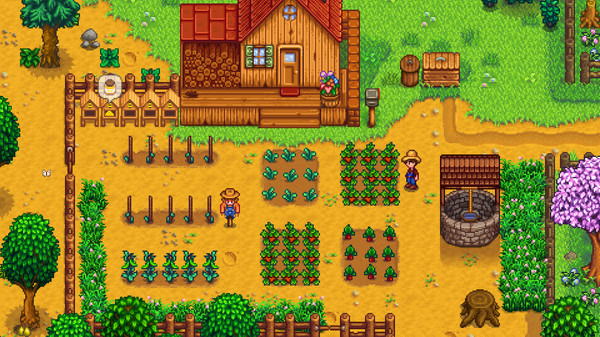

Conheça Stardew Valley
“Muito mais que um jogo de fazenda, este trabalho de amor de um homem só está cheio de conteúdo e coração aparentemente infinito .” 5/5 – Giant Bomb


Stardew Valley foi criado pelo game designer Eric Barone, com o pseudônimo de ConcernedApe. Durante os quatro anos que ele passou desenvolvendo sozinho, ele aprendeu as habilidades necessárias para produzir a música, arte, programação e design do jogo. O jogo foi lançado em 26 de fevereiro de 2016 e após dois meses ultrapassou a marca de 1 milhão de cópias vendidas.
Stardew Valley é um RPG de vida no campo de mundo aberto!
Você herdou a fazenda de seu avô. Armado com algumas ferramentas e algum dinheiro você inicia sua nova vida.
Mesmo num local pacífico com a presença da Joja Corporation o ambiente não é mais o mesmo.
O Centro Comunitário está em pedaços...
Com sua ajuda Stardew Valley pode se tornar um ótimo local para viver novamente.
O Personagem em Stardew Valley é customizável. A aparência inclui 24 tons de pele, 73 cortes de cabelo, 112 camisas, 4 calças e 20 acessórios. Todos podem ser usados por ambos os gêneros, a aparência pode ser alterada ao decorrer do jogo.
O gênero pode ser alterado e tem algumas restrições como a entrada ao spa masculino ou feminino. É possível casar-se com qualquer NPC, independente do gênero. Num casamento hetero a mulher fica grávida por 14 dias e dar luz à criança, num casamento do mesmo sexo uma criança pode ser adotada.